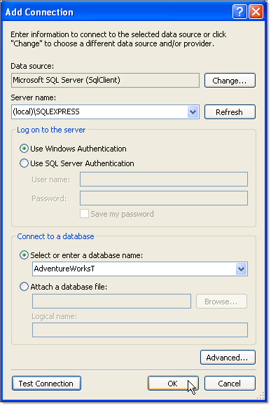
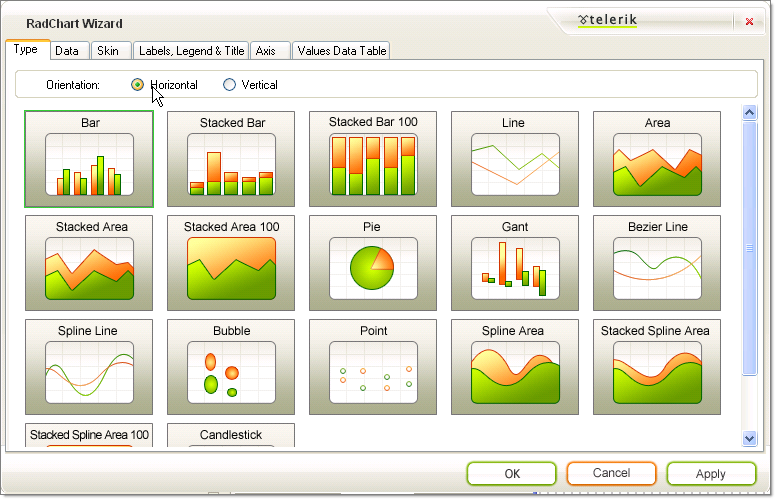
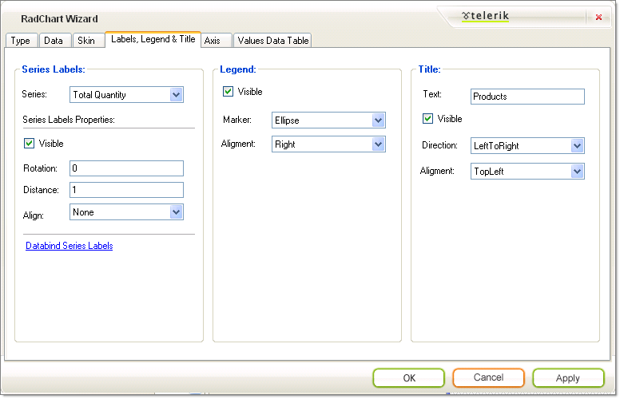

Quick Start: Create a Data Bound Chart
This Quick Start tutorial is designed to have you quickly up and running with a working data bound RadChart. In the tutorial you will populate
the chart by binding to a data source and will modify several properties that affect chart appearance.
Create a Windows Application
From the Visual Studio File menu select New | Project.
Select the "Windows Application" and enter a location path for the project.

From the Toolbox drag a RadChart component to the form. The project should now look like the figure below.

Configuring the Data Source
From the RadChart Smart Tag menu select the Data Choose Data Source__drop down and click the __Add Project Data Source item.

On the Choose a Data Source Type page of the Data Source Configuration Wizard select
Database and click the Next button.
On the Choose Your Data Connection page click the New Connection button. This will display the
Add Connection. Enter "(local)\SQLEXPRESS" in the Server name drop down list.
Select "AdventureWorksT" from the Select or enter a database name drop down list. Optionally, you can
click the Test Connection button to verify your settings so far. Click the OK button to close the dialog.On the Choose Your Data Connection__page of the wizard click the __Next button.

On the Choose Your Database Objects__page of the wizard locate the ProductInventory table and select the Quantity field.
Click the __Finish button. Note: In following steps this information will be overwritten and is just a place holder.

Three new components will appear in the component tray below the form designer: adventureWorksTDataSet, productInventoryBindingSource
and productInventoryTableAdapter. Right click the table adapter and select Edit Queries in DataSet Designer.

In the DataSet Designer__right click the ProductInventoryTableAdapter and select __Configure.

-
Enter the following SQL into the edit space provided in the __Enter a SQL Statement__page of the
__TableAdapter Configuration Wizard__.
[SQL] Resources table
- Click the Finish button.

Format the Chart Using the SmartTag
From the Smart Tag select the RadChart Wizard. Select the Type
tab and click the __Horizontal Orientation__radio button.On the RadChart Wizard Data tab Axis Labels choose the "SubCategory" from the X-Axis drop down.

On the RadChart Wizard Skin tab select the "Deep Blue" skin.

On the RadChart Wizard Labels, Legend and Title set the Legend Alignment
to "Right" and Title Text to "Products".
The X-Axis labels bound to the "SubCategory" column are too wide and will overflow. To make the plot area smaller to make room,
set the PlotArea.Appearance.Dimensions.Margins.Left to "50%".

The finished chart should look like the screenshot below.